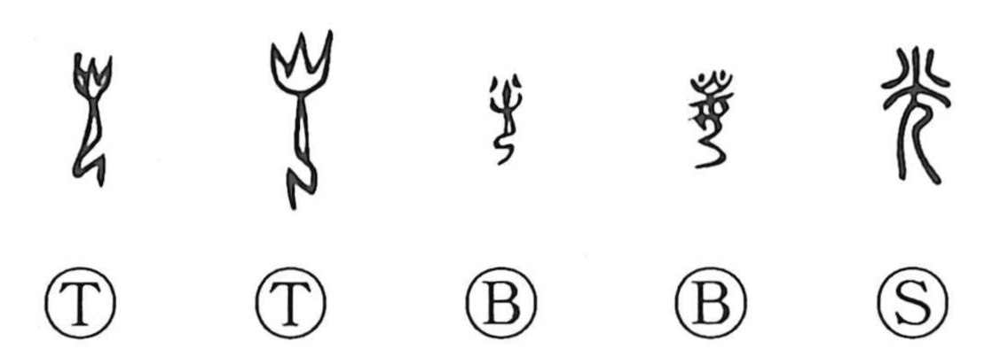

光

Kun: hikaru, hikari | On: kou
light ・ radiance ・ to shine
Explanation
This character is a compound of fire (火) and person (人/儿). In early forms, 儿 shows a kneeling human figure, above whose head a large flame is drawn to stress the presence of fire—built on the same principle as 見, which sets an enlarged eye on a person, and 先, which places the form of footsteps atop a person. Because fire was sacred in antiquity, there were attendants charged with guarding and serving the divine flame; 光 originally depicts such a fire-keeper. The meaning then shifted to the light of the fire itself, and from the beauty of illumination it developed senses like “to shine, to sparkle,” which further extended to honor and distinguished glory, as seen in words such as 光栄 and 光烈.